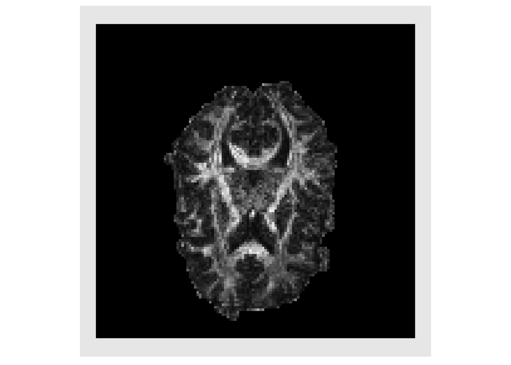
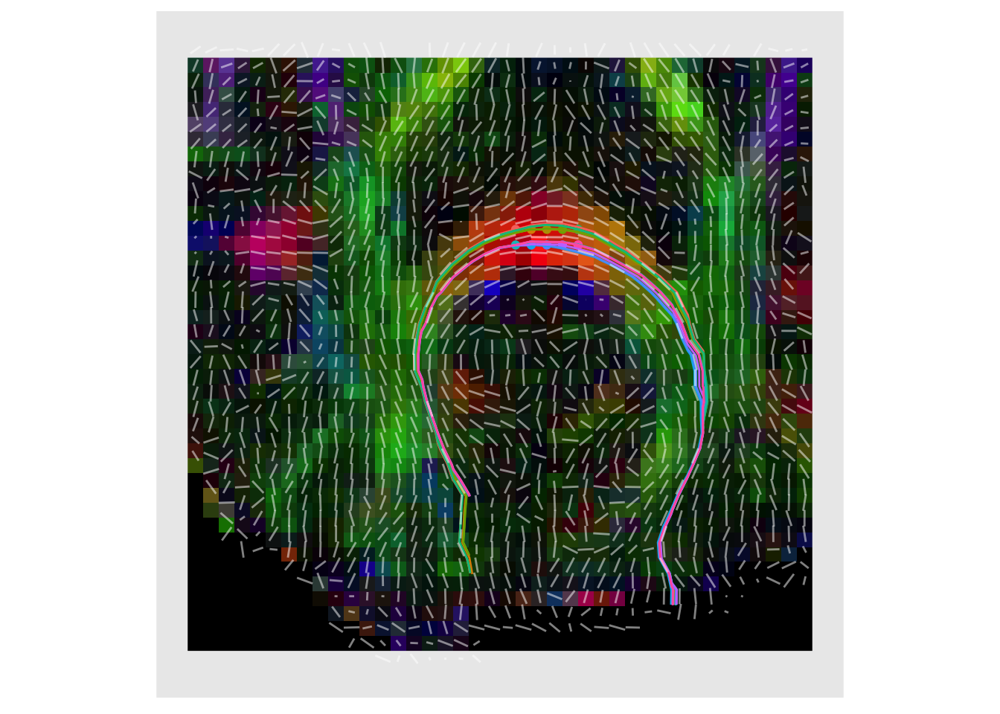

Multichannel image proccessing
Jeffrey T. Duda
2017-08-31
Overview
This document provides some examples illustrating how ANTsR may be used to work with multi channel images, such as rgb (i.e. color) data. This is still an extremely new feature and much of ANTsR does not yet support this image type. Examples will be added to this document as new functionality is implemented.
Basics
Because ANTsR relies upon ITK for image IO, multichannel support is inherently built in. Basic conversions and math operations work as expected.
# Read in and display header info
img = antsImageRead( getANTsRData("decslice"))
img
#> antsImage
#> Pixel Type : float
#> Components Per Pixel: 3
#> Dimensions : 128x128
#> Voxel Spacing : 1.875x1.875
#> Origin : -119.3253 68.19728
#> Direction : 1 0 0 -1
img[64,64]
#> , , 1
#>
#> [,1]
#> [1,] 17
#> [2,] 31
#> [3,] 2
# Convert to an array
arr = as.array(img)
dim(arr)
#> [1] 3 128 128
# Convert array to multichannel antsImage
img2 = as.antsImage(arr, components=TRUE)
img2
#> antsImage
#> Pixel Type : float
#> Components Per Pixel: 3
#> Dimensions : 128x128
#> Voxel Spacing : 1x1
#> Origin : 0 0
#> Direction : 1 0 0 1
# Convert array to antsImage and set header info via reference image
img2 = as.antsImage(arr, components=TRUE, reference=img )
img2
#> antsImage
#> Pixel Type : float
#> Components Per Pixel: 3
#> Dimensions : 128x128
#> Voxel Spacing : 1.875xNA
#> Origin : 68.19728 NA
#> Direction : 1 0 0 -1
# Basic math ops work the same as for scalar images
2 * sum(img)
#> [1] 1140762
sum(img * 2)
#> [1] 1140762Many functions only work on scalar images, so here we split a multichannel image into a list of scalar images, then the lapply function provides a convenient way to process all channels.
# Convert to list of scalar images
iList = splitChannels(img)
plotColor(iList)
sList = lapply( iList, function(x) { smoothImage(x, 1.5) } )
plotColor(sList)
# Merge back into multichannel image
simg = mergeChannels(sList)
# Write to file
# antsImageWrite(simg, "smoothslice.nii.gz")It is worth mentioning that ANTsR is not yet compatible with mclapply as provided in the “parallel” package. It’s something we will be looking into in the future. The main problem has to do with allocating new images, some functions that only access existing data will work, however it does not guarantee a faster execution time.
iMeans = 0
time1 = 0
timeParallel = NA
if("parallel" %in% rownames(installed.packages()) == TRUE) {
ptm = proc.time()
iMeans = mclapply( iList, function(x) mean(x), mc.cores=min(detectCores(),2) )
timeParallel = proc.time() - ptm
unlist(iMeans)
}
#> [1] 10.99554 13.68597 10.13177
ptm = proc.time()
iMeans = lapply(iList, function(x) mean(x) )
timeSerial = proc.time() - ptm
unlist(iMeans)
#> [1] 10.99554 13.68597 10.13177
timeParallel
#> user system elapsed
#> 0.005 0.016 0.034
timeSerial
#> user system elapsed
#> 0.005 0.002 0.007Working with diffusion tensor images
dt = antsImageRead(getANTsRData("dtislice"))
dtList = splitChannels(dt)
# Component of tensor are stored as: XX, XY, XZ, YY, YZ, ZZ
trace = dtList[[1]] + dtList[[4]] + dtList[[6]]
trace[trace<0] = 0
plotColor( trace )We only want to deal with voxels in the brain, so the getMask function is used to obtain rough estimate of the brain, and the image is plotted with background voxels tinted red.
mask = getMask(trace)
plotColor( list(trace, trace*mask, trace*mask))
Since we are only interested in voxels in the brain, a matrix is created where each row is voxel in the brain and each column in a tensor component, listed in upper.tri order. This allows us to quickly calculate the eigen decomposition for each tensor.
# list-based call to convert values to an array
mat = do.call(rbind, lapply( dtList, function(x) { x[mask>0] } ) )
# simplest convesion to array
# mat = as.array(dt, mask == 1)
# convert tensor from vector to matrix
initTensor <- function(x) {
tens = diag(3)
tens[lower.tri(tens, diag=TRUE)] = x
tens = tens + t(tens) - diag(diag(tens))
return(tens)
}
getFractionalAnisotropy <- function(evs) {
numer = sqrt( (evs[1]-evs[2])^2 + (evs[2]-evs[3])^2 + (evs[3]-evs[1])^2 )
denom = sqrt( sum(evs*evs) )
fa = 0
if ( denom > 0 ) {
fa = sqrt(0.5) * numer/denom
}
fa
}
# Eigen decomposition for each tensor
# eigs = unlist( apply(mat, 2, function(x) {
# eigen( initTensor(x) )
# } )
# )
all_eigs = apply(mat, 2, function(x) {
eigen( initTensor(x) )
} )
eigs = lapply(all_eigs, function(x) {
x$values
})
eigs = lapply(eigs, unlist)
evalMat = do.call(rbind, eigs)
evalMat[evalMat < 0 ] = 0
# Create images from the eigenvalues
eval1 = makeImage(mask, evalMat[,1])
eval2 = makeImage(mask, evalMat[,2])
eval3 = makeImage(mask, evalMat[,3])
plotColor( list(eval1, eval2, eval3))
The Fractional Anisotropy (FA) is typically used to measure how directionally specific the diffusion of water is within a voxel. This values is plotted below
faValues = apply(evalMat, 1, getFractionalAnisotropy )
faValues[faValues < 0] = 0
fa = makeImage(mask, faValues)
plotColor( fa )
Also of great interest is the eigenvector associated with the largest eigenvalue, this estimates the primary direction of diffusion (PDD) and in white matter this corresponds to the direction that is parallel to the myelinated axons in a fiber bundle
eig_vecs = lapply(all_eigs, function(x) {
x$vectors
})
eig_vecs = lapply(eig_vecs, c)
vecMat = do.call(rbind, eig_vecs)
evecx = makeImage(mask, vecMat[,1])
evecy = makeImage(mask, vecMat[,2])
evecz = makeImage(mask, vecMat[,3])
decList = list(evecx, evecy, evecz)
decList = lapply(decList, abs)
plotColor( decList )
Weighting the magnitude of the PDD by the FA is standard practice as it highlights regions with high directional specificity (i.e. white matter). This is known as a directional encoded colormap (DEC) (Pajevic and Pierpaoli 1999)
decList = lapply( decList, function(x){ fa*x } )
plotColor(decList)
To verify our processing, it can be useful to plot line segments showing the direction of some of the vectors. This is done in a subset of the image to avoid too much visual clutter.
lower = c(40,80)
upper = c(80,120)
subfa = cropIndices(fa, lowerind = lower, upperind = upper)
subVecList = list(evecx, evecy, evecz)
subVecList = lapply( subVecList, function(x){ cropIndices(x, lowerind = lower, upperind = upper)})
subDecList = lapply( subVecList, function(x){ abs(subfa*x) })
plotColor( subDecList, vectors=list(subVecList[[1]], subVecList[[2]]) )
Deterministic Fiber tractography
A common use for DTI is fiber tractography (Basser et al. 2000). Here we give a simplified example in which we restrict the tracts to lie within the slice. The first step is define a set of seeds which serve as the starting points for our tractography. Often, all points in the white matter are used as seed for “whole-brain tracking.” Here we manually define a small set of seed points for illustration.
# indices of seed points
seedIndices = rbind( c(61,92), c(62,92), c(63,92) )
seedIndices = rbind( seedIndices, c(64,92), c(65,92), c(65,92) )
seedIndices = rbind( seedIndices, c(61,93), c(62,93), c(63,93) )
seedIndices = rbind( seedIndices, c(64,93), c(65,93), c(65,93) )
# convert to physical space points
seedPts = antsTransformIndexToPhysicalPoint(fa, seedIndices)
plotColor( subfa, points=seedPts )
trackFromSeed <- function(vecs, fa, seed) {
stepSize = 0.2
faThresh = 0.2
iPt = seed
pts = iPt
idx = antsTransformPhysicalPointToIndex(fa, seed)
faValue = fa[idx[1], idx[2]]
ppdx = vecs[[1]][ idx[1], idx[2] ]
ppdy = vecs[[2]][ idx[1], idx[2] ]
lastVec = as.vector(antsGetDirection(fa) %*% as.matrix(c(ppdx,ppdy)))
iVec = lastVec
while ( faValue > faThresh ) {
iVec = iVec / sqrt(sum(iVec*iVec))
if ( sum(iVec*lastVec) < 0 ) { iVec = -iVec }
iPt = iPt + stepSize*iVec
pts = rbind(pts, iPt)
idx = antsTransformPhysicalPointToIndex(fa, iPt)
faValue = fa[idx[1], idx[2]]
lastVec = iVec
ppdx = vecs[[1]][ idx[1], idx[2] ]
ppdy = vecs[[2]][ idx[1], idx[2] ]
iVec = as.vector(antsGetDirection(fa) %*% as.matrix(c(ppdx,ppdy)))
}
iPt = seed
idx = antsTransformPhysicalPointToIndex(fa, seed)
faValue = fa[idx[1], idx[2]]
vecs = lapply( vecs, function(x){ -x })
ppdx = vecs[[1]][ idx[1], idx[2] ]
ppdy = vecs[[2]][ idx[1], idx[2] ]
lastVec = as.vector(antsGetDirection(fa) %*% as.matrix(c(ppdx,ppdy)))
iVec = lastVec
while ( faValue > faThresh ) {
iVec = iVec / sqrt(sum(iVec*iVec))
if ( sum(iVec*lastVec) < 0 ) { iVec = -iVec }
iPt = iPt + stepSize*iVec
pts = rbind(iPt, pts)
idx = antsTransformPhysicalPointToIndex(fa, iPt)
faValue = fa[idx[1], idx[2]]
lastVec = iVec
ppdx = vecs[[1]][ idx[1], idx[2] ]
ppdy = vecs[[2]][ idx[1], idx[2] ]
iVec = as.vector(antsGetDirection(fa) %*% as.matrix(c(ppdx,ppdy)))
}
return(data.frame(x=pts[,1],y=pts[,2]))
}
trackx = c()
tracky = c()
trackid = c()
for ( i in 1:dim(seedPts)[1] ) {
track = trackFromSeed(list(evecx,evecy), fa, seedPts[i,])
trackx = c(trackx,track$x)
tracky = c(tracky,track$y)
trackid = c(trackid, rep(i, length(track$x)))
}
ldat = data.frame(x=trackx, y=tracky, id=factor(trackid))
plotColor(subDecList, paths=ldat, points=seedPts, vectors=list(subVecList[[1]], subVecList[[2]]))
plotColor(subfa, paths=ldat, points=seedPts)
References
Basser, P. J., S. Pajevic, C. Pierpaoli, J. Duda, and A. Aldroubi. 2000. “In Vivo Fiber Tractography Using Dt-Mri Data.” Magn Reson Med 44 (4). Section on Tissue Biophysics; Biomimetics, NICHD, Bethesda, Maryland 20892-5772, USA. pjbasser@helix.nih.gov: 625–32.
Pajevic, S., and C. Pierpaoli. 1999. “Color Schemes to Represent the Orientation of Anisotropic Tissues from Diffusion Tensor Data: Application to White Matter Fiber Tract Mapping in the Human Brain.” Magn Reson Med 42 (3). Mathematical; Statistical Computing Laboratory, Center for Information Technology, National Institutes of Health, Bethesda, Maryland, USA.: 526–40.